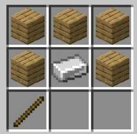
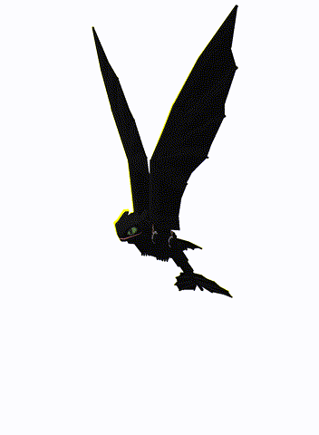
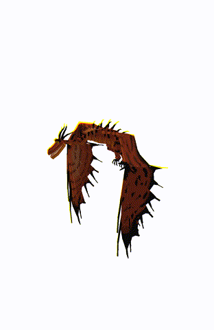
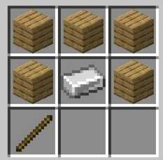

Saddle for dragons
CRAFTING
Crosier
Use: Used to fire the dragon projectile while mounted

CRAFTING
| Night Fury | |
|---|---|
|  |
Rideable: YES Health: 100 - 150 Attacks: Melee, ranged (you can attack from a distance when ride but you will need a staff) Taming: Approach the baby dragon or a non-aggressive adult (non-aggressive adults change their eyes when a salmon is on hand) and feed raw salmon until hearts come out Spawn: Savannah, At Night (in all biomes) Tip: bring enough fish to tame your dragon and watch out for aggressive dragons |
| Sand Wraith | |
|---|---|
|
Rideable: YES Health: 200 - 250 Attacks: Melee, ranged (you can attack from a distance when mounted but you will need a staff) Taming: Approach the baby dragon or a non-aggressive adult (non-aggressive adults change their eyes when a salmon is on hand) and feed raw salmon until hearts come out Spawn: Desert, Beaches Tip: bring enough fish to tame your dragon and watch out for aggressive dragons |
|
| Night terror | |
|---|---|
|
Rideable: NO Health: 20 - 50 Attacks: Melee, ranged (you can attack from a distance when mounted but you will need a staff) Taming: Approach the baby dragon or a non-aggressive adult (non-aggressive adults change their eyes when a salmon is on hand) and feed raw salmon until hearts come out Spawn: At Night (in all biomes) Tip: bring enough fish to tame your dragon and watch out for aggressive dragons |
|
| Stormcutter | |
|---|---|
|
Rideable: YES No saddle needed Health: 200 - 250 Attacks: Melee, ranged (you can attack from a distance when ride but you will need a staff) Taming: Approach the baby dragon or a non-aggressive adult (non-aggressive adults change their eyes when a salmon is on hand) and feed raw salmon until hearts come out Spawn: Taiga, At Night (in all biomes) Tip: bring enough fish to tame your dragon and watch out for aggressive dragons |
|
| Gronckle | |
|---|---|
|
Rideable: YES Health: 200 - 250 Attacks: Melee, ranged (you can attack from a distance when ride but you will need a staff) Taming: Approach the baby dragon or a non-aggressive adult (non-aggressive adults change their eyes when a salmon is on hand) and feed raw salmon until hearts come out Spawn: At Night (in all biomes) Tip: bring enough fish to tame your dragon and watch out for aggressive dragons The Gronckle will turn the stones you give him into raw iron |
|
| Deadly Nadder | |
|---|---|
|
Rideable: YES
Health: 100 - 150 Attacks: Melee, ranged (you can attack from a distance when ride but you will need a staff) Taming: Approach the baby dragon or a non-aggressive adult (non-aggressive adults change their eyes when a salmon is on hand) and feed raw salmon until hearts come out Spawn: Savannah, At Night (in all biomes) Tip: bring enough fish to tame your dragon and watch out for aggressive dragons |
|
| Monstrous Nightmare | |
|---|---|
|  |
Rideable: YES Health: 100 - 250 Attacks: Melee, ranged (you can attack from a distance when ride but you will need a staff) Taming: Approach the baby dragon or a non-aggressive adult (non-aggressive adults change their eyes when a salmon is on hand) and feed raw salmon until hearts come out Spawn: Savannah, At Night (in all biomes) Tip: bring enough fish to tame your dragon and watch out for aggressive dragons |
| ITEMS | |
|---|---|
|
Saddle for dragons |
CRAFTING |
|
Crosier Use: Used to fire the dragon projectile while mounted
|
CRAFTING  |